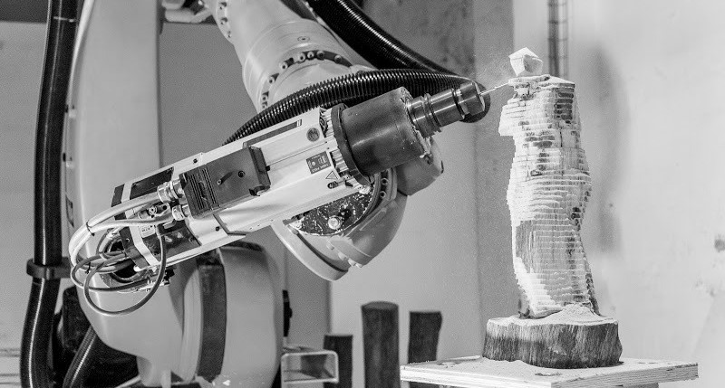

/robotics_&_composites
(17_may_2022)
This was the Wildcard week, where we explored two different topics that are not directly connected to
the FabAcademy but they complement some of the knowledge we already have from other weeks. This year,
the subjects in question were Robotics and Composites.
For the robotics part, we started learning about different kinds of robot arms that exist nowadays,
the motors they use, the amount of axis they have, the end effectors one can use, and some techniques
and applications commonly used such as 3D printing, milling, cutting and automation. I found really
interesting some examples they showed like a project from IAAC alumni called Mataerial, where they
printed ceramics on the air. They also showed the example of La Máquina from Noumena, the place I
worked before studying at IAAC. After this, Edu made a brief introduction on how to control a robot
from Grasshopper using a plugin called Robots, and gave us some tips and recommendations.

During the second part of the class, the Fab Lab team showed how to create a small skating board
using composites. To do so, they used a CNC cut mould made out of extruded polystyrene, some burlap
fiber and epoxy resin. Also, some isolation and breathable plastics and a material to absorb the
spare resin. We could see the whole process where they stacked layer by layer of fiber brushing the
epoxy resin on the whole surface, and then how they placed it on the vacuum machine with the mould.
It was interesting and funny and I hope I will get the chance of creating my own board someday!